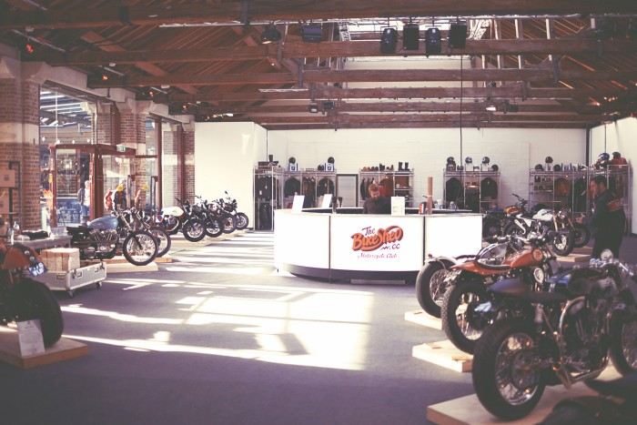

Bike Shed London 2015
All you need to know about Bike Shed London 2015:
This year’s Bike Shed exhibition is being held in London’s stunning Tobacco Dock, again, about ten minutes walk from Tower Bridge.
Expect to see around 150 custom motorcycles from the new wave custom scene, plus art, photography, quality gear and apparel, hosted in comfy surroundings with quality food, a proper bar and barrista coffee, plus we have a barbershop and even a tattooist on hand. You’ll want to stay all weekend.